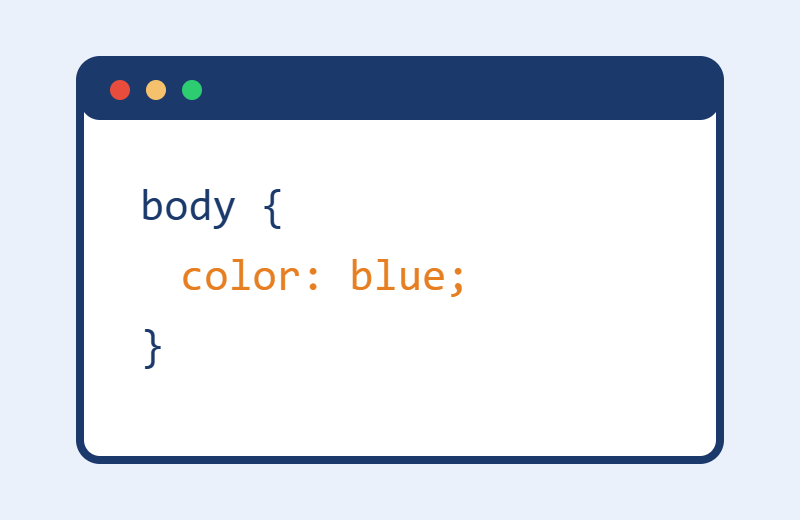

Sobre

CSS (Cascading Style Sheets) é a linguagem usada para definir a aparência de páginas web: cores, fontes, espaçamentos, layout e muito mais. Manter o CSS em um arquivo separado deixa o código organizado e fácil de reaproveitar.
Seletores de CSS
- Classe (.classe)
- Identificação (#id)
- Tag (p, h1, img)
- Universal (*)
- Compartilhado (h1, h2, h3)
Tabela de exemplo
| Propriedade | Função | Exemplo |
|---|---|---|
| margin | Espaço externo | margin: 20px; |
| padding | Espaço interno | padding: 15px; |